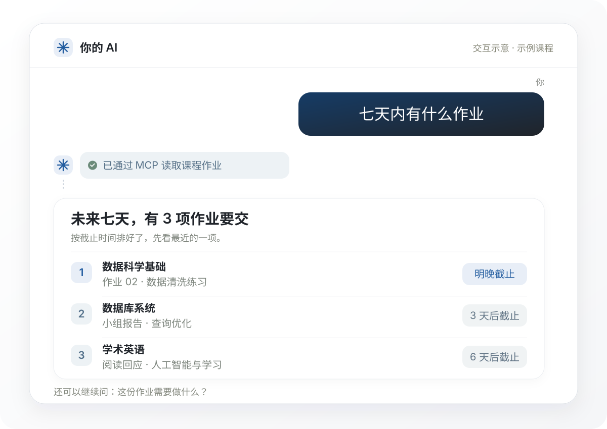

先同步
把课程，带到桌面。
打开应用，登录学校账号。课程、作业、公告和课件，会一起同步过来。
学校账号登录 · 课程信息自动整理为港科广同学准备
作业、公告、课件，都回到同一个地方。
从同步课程，到问 AI，往下看看就知道。
继续往下划
Canvas 课程管理 · Mac / Windows
应用真实界面，课程为演示数据
从同步开始
跟着往下看，你的课程会怎样整理好。
先同步
打开应用，登录学校账号。课程、作业、公告和课件，会一起同步过来。
学校账号登录 · 课程信息自动整理全部课程
先看最近一项截止，再看未来 30 天。不同课程用不同颜色，哪天要交什么，都放在一张月历里。
下一项截止 · 30 天月历进入一门课
点进课程，作业、公告、课件、课程结构分析，四块看板一起呈现。接下来，逐个看看。
四块看板 · 随时回到总览作业看板
什么时候交、要做什么，打开作业就能看。需要一点思路时，还能让 AI 帮你理解要求、拆出步骤。
查看作业要求 · 梳理完成思路公告看板
本周怎么上课、项目有什么变化，按时间整理。找一条公告，不用再翻一遍整门课。
课程通知 · 公告详情课件看板
讲义、阅读材料和课堂文件，按课程放好。可以批量下载到电脑，之后用起来更顺手。
按课整理 · 批量下载课程结构分析
让 AI 帮你读课程资料，整理课程结构、评分构成与学习建议。面对一门新课，先知道从哪里着手。
课程导学 · 学习建议还有一种更顺手的方式
通过 MCP 服务连接后，Codex 等支持接入的 AI，
就能直接帮你获取课程和作业。省去来回复制，也不用逐门翻找。
你只需问一句
像平时聊天一样，告诉 AI 你想知道什么。
AI 帮你查
AI 通过 MCP 服务读取最近同步的课程信息，找出接下来要交的作业。
回答回到聊天里
按截止时间列清楚课程和作业。还想了解要求？接着问就好。

先安装 Canvas 课程管理，登录并同步课程。按连接说明完成一次 MCP 服务配置，再把它连接到支持接入的 AI，就可以直接在聊天里查询。
Codex 已完成连接测试。其他 AI 能否接入，取决于它是否支持自定义 MCP 服务。查询已同步的信息时，读取的是本机课程缓存；需要重新同步时，保持桌面应用运行。
查看连接说明 ↗适用于 macOS 13 及以上的 Apple Silicon Mac。
安装后，使用学校账号登录 Canvas。
获取适用于 M 系列芯片的
DMG 安装包。
双击下载的 DMG，
打开安装窗口。
将应用拖到「应用程序」，
等待复制完成。
打开应用，点击「同步」，
完成学校账号登录。
首次打开前，请留意
当前版本尚未经过 Apple 公证，macOS 可能拦截首次启动。请先阅读下方说明，再决定是否安装。
关于兼容性、登录与数据的几个问题。